시내에 이새끼 말곤 수협농협신협밖에 없음
근처에서 논이나 밭 보임
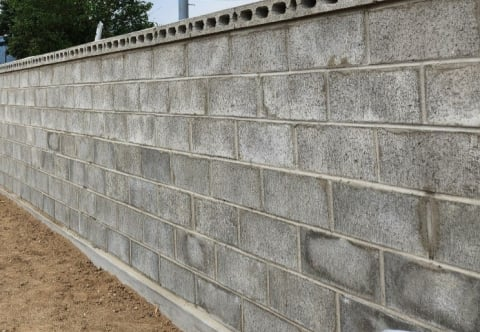
이렇게 생긴 시멘트벽돌 벽 많음
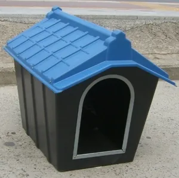
여기 진돗개 있음
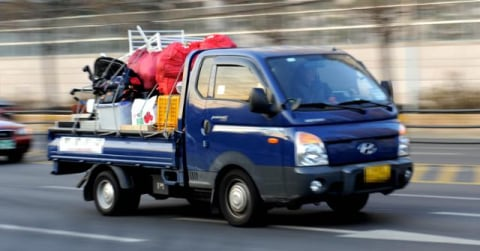
파란색 개인용달 포터(기본 휠 or 휠캡) 널림
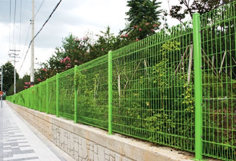
시내에 연두색 펜스로 떡칠되어있음
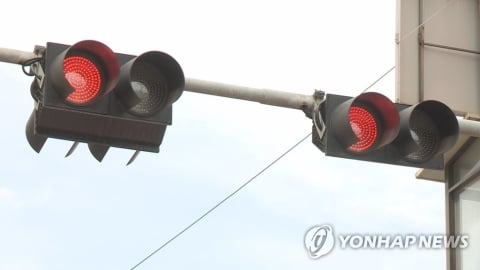
빨간불 깜박거리기만 하는 신호등 많음
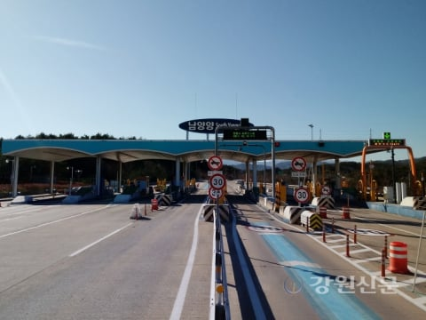
톨게이트 편도 4차선 이하임
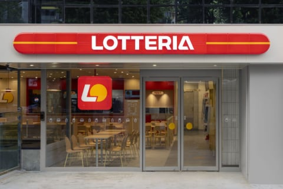
롯데리아 말고 햄버거집 없음
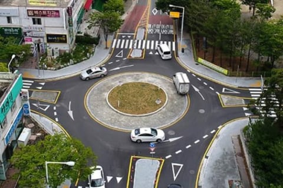
로터리 존나많음
이새끼가 1황임
11개중 9개 이상 해당되면 깡촌 맞음 ㅇㅇ

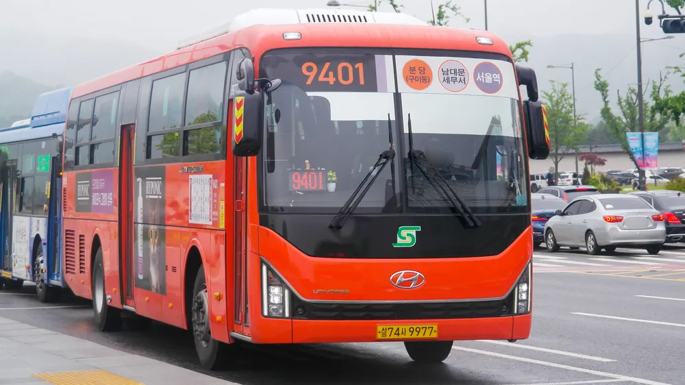
빨간 버스 돌아다님
흑인 or 인도파키스탄 or 백인 관광객 자주보임
(백인 남자는 선글라스 국룰)
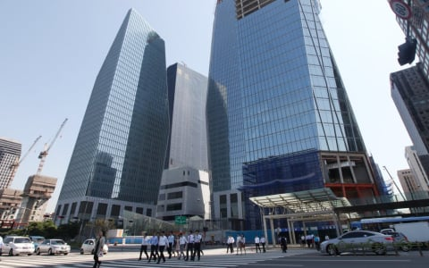
통유리 고층건물 많음
머리 탈색한 여자 많음
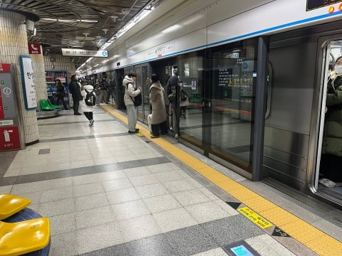
지하철이나 경전철같은거 있음
보도블록 보통 이거 둘 중 하나임
이새끼 잘 안보임
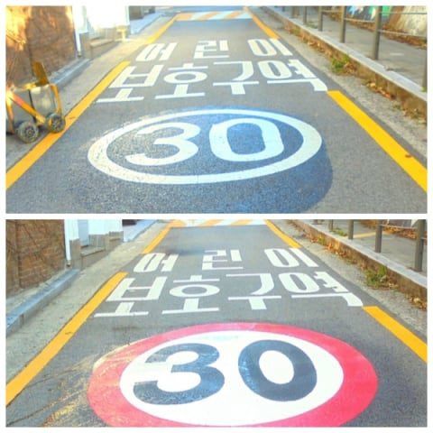
잼민이 보호구역 많음
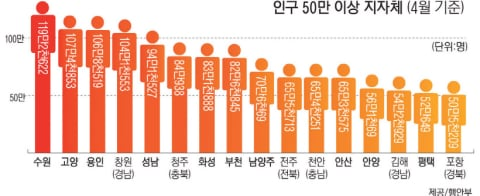
뉴스에서 사건나면 정확하게 도시이름 나옴
미친새끼 존나많음
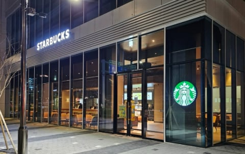
커피색 통유리 +
출처를 알 수 없는 기하학적인 그림이 그려진
스타벅스 많음
11개중 8개 이상 해당되면 대도시 ㅇㅇ
(+추가 포르쉐 타이칸 많음)

댓글
수집 당시 댓글 183개
한나무쿤 · 11.10 05:35:27
귤곰 · 11.10 07:56:31
ㅇㅇ · 11.10 09:17:18
ㅇㅇ · 11.10 14:30:14
땨뗘(봇) · 11.12 00:20:07
ㅇㅇ · 11.12 00:21:15
· Mernerner · 11.12 11:23:35
ㅋㅋ · 11.12 00:22:02
ㅇㅇ · 11.12 00:23:54
ㅇㅇ · 11.12 00:25:15
· 빻윾땡 · 11.12 02:57:51
ㅇㅇ · 11.12 00:29:48
· ㅇㅇ · 11.12 07:10:52
ㅇㅇ · 11.12 00:29:49
ㅇㅇ · 11.12 00:30:18
않되 · 11.12 00:32:27
슈밤베르크 · 11.12 00:32:28
ㅇㅇ · 11.12 00:32:33
ㅇㅇ · 11.12 00:34:02
· ㅇㅇ · 11.12 00:34:18
· ㅇㅇ · 11.12 00:44:20
ㅇㅇ · 11.12 00:38:56
· ㅇㅇ · 11.12 06:28:45
ㅇㅇ · 11.12 00:40:05
ㅇㅇ · 11.12 00:43:43
· ㅇㅇ · 11.12 01:05:18
ㅇㅇ · 11.12 00:52:13
ㅇㅇ · 11.12 00:53:49
ㅇㅇ · 11.12 00:58:33
ㅇㅇ · 11.12 01:00:33
ㄱㄱㄱㄱㄱ · 11.12 01:01:45
· ㅇㅇ · 11.12 08:05:57
· 이의현 · 11.12 14:50:37
ㅇㅇ · 11.12 01:03:15
ㄱㄱㄱㄱㄱ · 11.12 01:03:36
· ㅇㅇ · 11.12 09:39:42
· ㅇㅇ · 11.12 10:25:11
rxde · 11.12 01:06:22
ㅇㅇ · 11.12 01:07:20
ㅇㅇ · 11.12 01:07:54
ㅇㅇ · 11.12 01:19:47
ㅁㄴㅇㄹ · 11.12 01:20:46
ㅇㅇ · 11.12 01:25:22
ㅇㅇ · 11.12 01:28:45
ㅇㅇ · 11.12 01:29:57
ㅇㅇ · 11.12 01:45:43
ㅇㅇ · 11.12 01:58:39
· ㅇㅇ · 11.12 10:33:06
삭제됨 · 11.12 01:58:46
· S＆P500 · 11.12 02:00:17
ㅇㅇ · 11.12 02:11:25
· ㆁㆁ · 11.12 02:21:28
· ㅇㅇ · 11.12 12:36:25
ㅇㅇ · 11.12 02:11:36
ㅇㅇ · 11.12 02:37:46
· ㅇㅇ · 11.12 02:40:04
ㅇㅇ · 11.12 02:41:42
빻윾땡 · 11.12 02:57:39
qwdasd · 11.12 03:12:39
ㅇㅇ · 11.12 03:30:56
· ㅇㅇ · 11.12 09:40:11
ㅇㅇ · 11.12 04:08:34
야채주스 · 11.12 04:21:32
ㅇㅅㅇ · 11.12 05:52:12
ㅇㅇ · 11.12 06:32:36
ㅇㅇ · 11.12 06:35:37
딸기장사 · 11.12 06:36:55
ㅇㅇ · 11.12 06:38:51
ㅇㅇ · 11.12 06:48:16
ㅇㅇ · 11.12 07:21:26
ㅇㅇ · 11.12 07:37:52
ㅇㅇ · 11.12 07:55:01
ㅇㅇ · 11.12 08:23:11
ㅇㅇ · 11.12 08:46:30
ㅇㅇ · 11.12 08:50:24
ㅇㅇ · 11.12 09:26:05
ㅇㅇ · 11.12 09:26:29
ㅇㅇ · 11.12 09:38:31
ㅇㅇ · 11.12 09:41:50
ㅇㅇ · 11.12 10:33:33
· ㅇㅇ · 11.12 10:34:19
ㅇㅇ · 11.12 10:57:30
ㅇㅇ · 11.12 11:00:48
ㅇㅇ · 11.12 11:09:39
ㅇㅇ · 11.12 11:21:32
ㅇㅇ · 11.12 12:15:28
ㅇㅇ · 11.12 12:36:37
ㅇㅇ · 11.12 12:38:43
ㅇㅇ · 11.12 12:55:12
ㅇㅇ · 11.12 13:52:44
ㅇㅇ · 11.12 14:19:42
ㅇㅇ · 11.12 14:27:25
ㅇㅇ · 11.12 14:29:03
ㅇㅇ · 11.12 14:46:11
ㅇㅇ · 11.12 14:46:12
ㅇㅇ · 11.12 15:34:31
ㅇㅇ · 11.12 16:38:40
ㅇㅇ · 11.12 17:01:04
메시군총사령관 · 11.12 17:31:18
ㅇㅇ · 11.12 17:46:18
ㅇㅇ · 11.09 22:39:29
· ㅇㅇ · 11.09 22:42:56
· ㅇㅇ · 11.09 22:44:07
· 뭐든지뉴비 · 11.09 22:52:11
· ㅇㅇ · 11.09 23:03:05
· ㅇㅇ · 11.09 23:05:49
· ㅇㅇ · 11.09 23:09:00
· ㅇㅇ · 11.09 23:13:44
· 백석행 · 11.09 23:15:16
· ㅇㅇ · 11.09 23:21:10
· ㅇㅇ · 11.09 23:21:50
· 낭만원툴 · 11.10 00:15:52
· ㅇㅇ · 11.10 02:15:17
· PP사비 · 11.10 08:59:37
· ㅇㅇ · 11.10 11:18:04
· PIG말리온 · 11.10 16:19:51
· ㅇㅇ · 11.12 00:41:51
· ㅇㅇ · 11.12 01:43:08
ㅇㅇ · 11.09 22:40:41
비신마타라 · 11.09 22:40:48
ㅇㅇ · 11.09 22:40:55
ㅇㅇ · 11.09 22:43:05
힐달라구우우우웃 · 11.09 22:43:08
· ㅇㅇ · 11.09 23:05:50
· ㅇㅇ · 11.09 23:08:43
· 백석행 · 11.09 23:15:44
· ㅇㅇ · 11.09 23:20:13
· ㅇㅇ · 11.09 23:22:19
· ㅇㅇ · 11.10 00:30:20
· ㅇㅇ · 11.10 00:31:33
· 블랙글레이즈드 · 11.10 10:49:21
· ㅇㅇ · 11.12 00:26:22
· ㅇㅇ · 11.12 00:28:29
· ㅇㅇ · 11.12 00:52:41
분탕용깡계 · 11.09 22:43:57
· ㅇㅇㅇ · 11.09 22:45:20
술담배여자도박 · 11.09 22:44:42
· 술담배여자도박 · 11.09 22:45:37
· ㅇㅇㅇ · 11.09 22:46:53
· 술담배여자도박 · 11.09 22:48:06
· ㅇㅇㅇ · 11.09 22:50:31
· 술담배여자도박 · 11.09 22:51:06
· ㅇㅇ · 11.09 23:05:18
ㅇㅇ · 11.09 22:44:51
· ㅇㅇ · 11.10 00:40:21
KASK · 11.09 22:45:34
· 술담배여자도박 · 11.09 22:46:07
· ㅇㅇ · 11.12 07:06:38
ㅇㅇ · 11.09 22:48:43
· ㅇㅇㅇ · 11.09 22:51:04
· ㅇㅇ · 11.09 23:10:01
· ㅇㅇ · 11.10 13:53:35
· ㅇㅇ · 11.12 03:23:37
· GUEST02 · 11.12 04:59:00
ㅇㅇ · 11.09 22:49:06
ㅇㅇ · 11.09 22:50:02
ㅇㅇ · 11.09 22:59:39
대깨옵붕 · 11.09 23:01:56
ㅇㅇ · 11.09 23:05:12
ㅇㅇ · 11.09 23:05:17
ㅇㅁ · 11.09 23:05:20
ㅇㅇ · 11.09 23:06:28
이의현 · 11.09 23:07:25
· ㅇㅇ · 11.12 09:59:41
· 이의현 · 11.12 14:49:19
ㅇㅇ · 11.09 23:07:32
· 싼마이인생 · 11.09 23:32:06
ㅇㅇ · 11.09 23:08:52
ㅇㅇ · 11.09 23:10:23
ㅇㅇ · 11.09 23:15:51
· 개댇지 · 11.09 23:22:07
ㅇㅇ · 11.09 23:21:23
싼마이인생 · 11.09 23:38:41
드라이플라워 · 11.10 00:16:29
· 드라이플라워 · 11.10 00:18:07
· ㅇㅇ · 11.10 10:55:04
블랙보틀 · 11.10 00:18:34
· 블랙보틀 · 11.10 00:22:38
· ㅇㅇㅇ · 11.12 00:23:12
· ㅇㅅㅇ · 11.12 05:51:42
ㅇㅇ · 11.10 01:49:56
ㅇㅇ · 11.10 04:30:24
· ㅇㅇ · 11.12 06:27:22